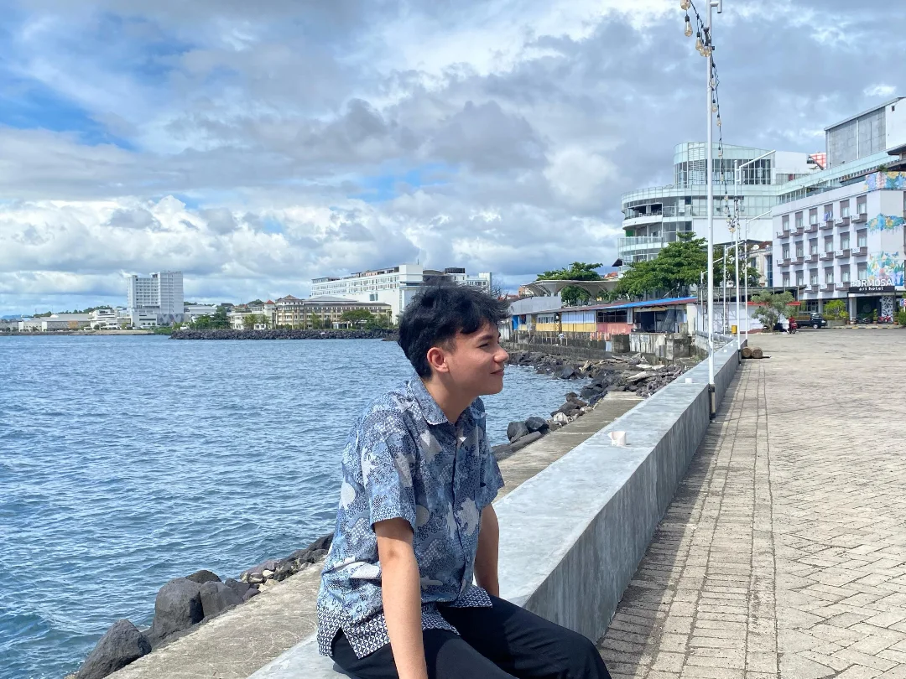

The Architect

Hizkia Palit
IT Student @ Sam Ratulangi University
Batch 2021
Halo! Saya adalah mahasiswa Teknik Informatika yang sedang berfokus pada pengembangan game edukasi dan eksplorasi teknologi. Saya percaya bahwa teknologi terbaik adalah yang memiliki jiwa dan akar budaya yang kuat.
Academic Journey
Saat ini di FT UNSRAT, saya sedang menyelesaikan proyek skripsi "Apostle". Selain akademik, saya aktif mendalami linguistik, terutama bahasa Jerman dan Inggris, untuk memperluas cakrawala komunikasi saya.
Future Horizons
Rencana besar saya selanjutnya adalah melanjutkan perjalanan hidup dan karier di Saskatchewan, Canada. Saya sedang mempersiapkan segala aspek, mulai dari keahlian teknis hingga kemampuan bahasa untuk mewujudkan visi tersebut.